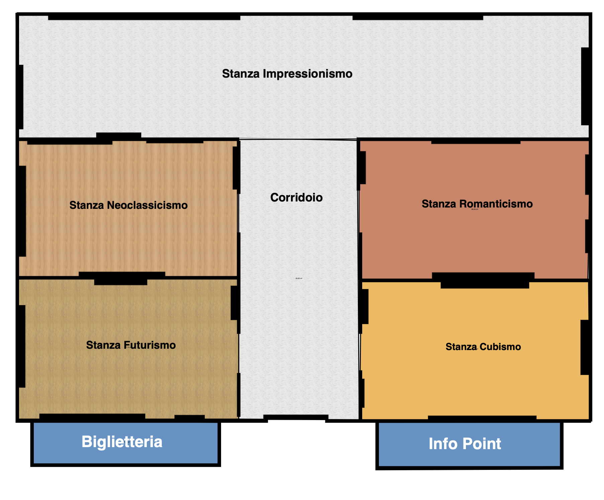

<ion-header [translucent]="true">
  <ion-toolbar>
  </ion-toolbar>
</ion-header>
<ion-content [fullscreen]="true">
  <ion-header collapse="condense">
    <ion-toolbar>
    </ion-toolbar>
  </ion-header>

  
  <map name="image_map">
    <area alt="impressionismo" title="impressionismo" routerLink="/stanza/2" coords="45,49,1772,413" shape="rect">
    <area alt="neoclassicismo" title="neoclassicismo" routerLink="/stanza/3" coords="44,415,707,838" shape="rect">
    <area alt="futurismo" title="futurismo" routerLink="/stanza/4" coords="57,835,713,1253" shape="rect">
    <area alt="romanticismo" title="romanticismo" routerLink="/stanza/1" coords="1076,412,1765,834" shape="rect">
    <area alt="cubismo" title="cubismo" routerLink="/stanza/5" coords="1077,845,1760,1256" shape="rect">
  </map>
</ion-content>

